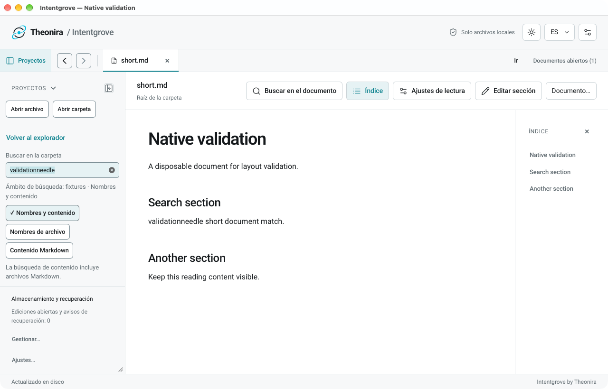
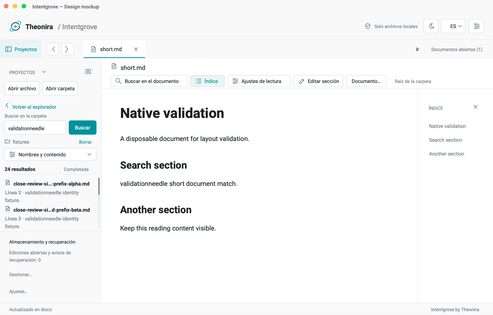
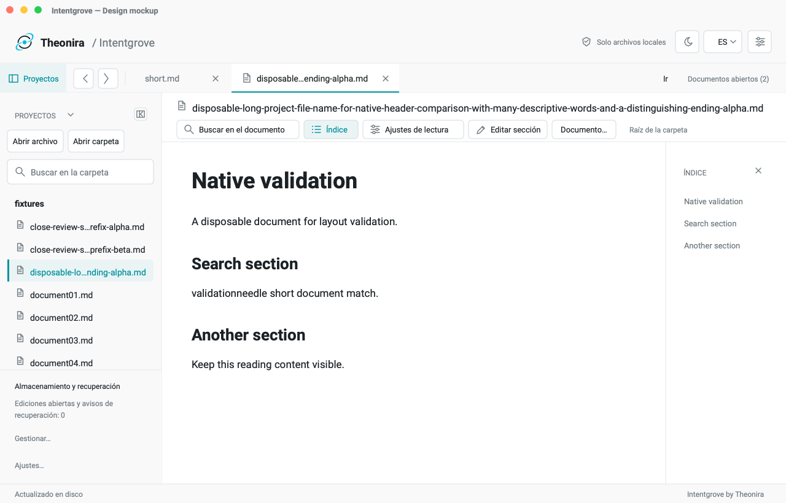
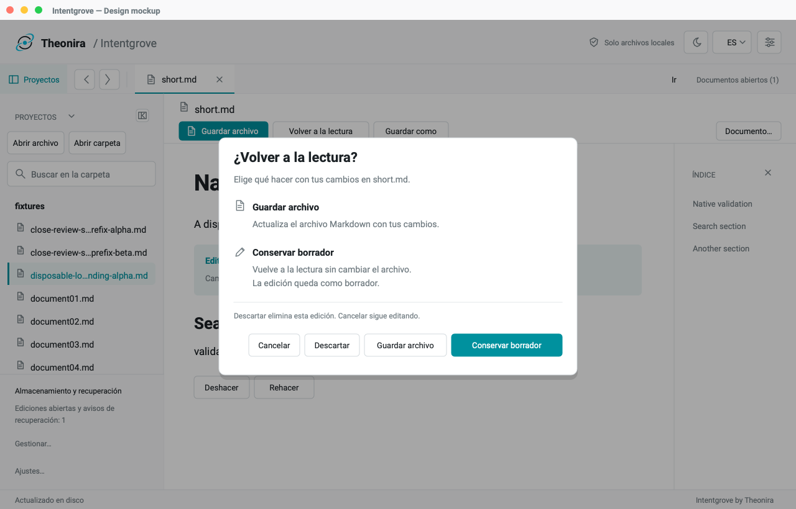

Why the first draft fell short
The execution needed revision.
The earlier overlays were incomplete and not visually validated.
- Typography and alignment: drawn text and controls did not share the native UI’s font metrics or spacing.
- Incomplete search states: the draft hid options without showing their expanded treatment, and left too little useful result space.
- Over-truncated identity: the filename stayed in a narrow slot despite available width in the document column.
- Weak dialog hierarchy: dense explanatory copy did not make the two preservation choices easy to scan.
DR-001 · Search
Keep the query beside the results.
A compact, stable query region sits above the results viewport. Search options remain available in a menu with an explicit expanded state.


Place the explicit Search action beside the query. Show the active mode on the closed menu. Let results scroll without moving query or scope.
Validate keyboard and pointer behavior, expanded-menu focus, ignored-on indication, detailed scanned/skipped status and empty/error/loading states.
DR-002 + DR-005 · File identity
Give the filename the width it needs.
A full-width identity row uses the document column before truncating. Toolbar and parent context occupy a second row, within the same 80px header.


Preserve alpha.md and beta.md endings in tree rows. Use measured middle truncation only when needed; keep the existing full-name/path disclosure.
Check native geometry, longer names, explicit identity for unopened rows and a second sidebar width. Narrow native layout remains unresolved.
DR-004 · Preservation choices
Explain each consequence where it matters.
Separate descriptions make Save and Keep draft easy to compare. Keep draft retains its primary emphasis, with Cancel and Discard clearly distinct.


Name the file destination. State that keeping a draft returns to reading without changing the file. Explain Cancel and Discard briefly.
Test safe Save/Keep outcomes and comprehension. Copy applies to return-to-reading only; other close triggers need their actual continuations.
Preserve / verify
Design review, with explicit limits.
Preserved: existing palette and brand mark, Projects header dismissal, sidebar/footer ownership, reader and outline columns, safe draft emphasis, and full-name disclosure.
Blocked: DR-003 narrow native behavior and second-width tree validation. No inference from browser evidence.
Verified here: all ten new PNG mockups were inspected at original resolution; measured text-width checks found no unintended overflow. Selected design color pairs were measured.
Not verified: the HTML page’s browser rendering and controls. The prior local-file browser security block remains respected. Native behavior, accessibility and persistence require separate tests.

Implementation remains gated
Recommend this direction for your review.
These are newly rendered design images, not screenshots of an implemented app. The geometry and copy are proposed. No source code, dependencies or application configuration changed.
Review order: search → file identity → preservation choices. All three proposals need your explicit approval before implementation.
Previous draft retained for comparison
Superseded and unvalidated. Shown as historical design work, never as approved UI.